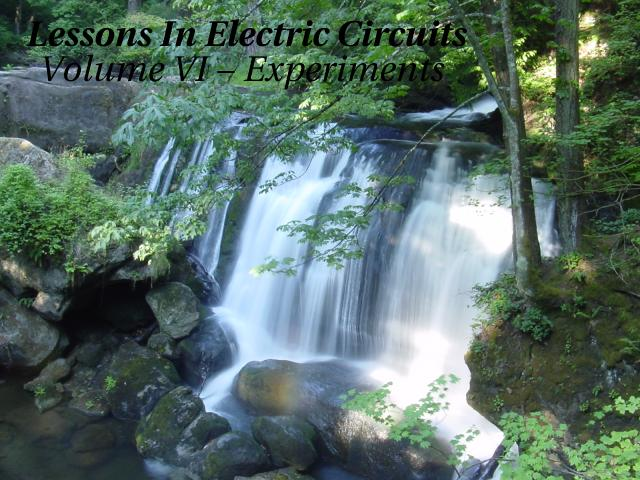
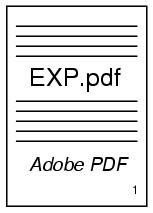
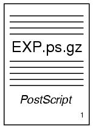
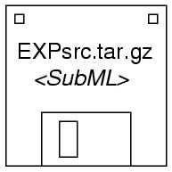
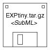

Copyright (C) 2002-2014, Tony R. Kuphaldt
See the Design Science License (Appendix 3) for details regarding copying and distribution
Revised January 18, 2010
Download printable versions of this volume
Adobe PDF format:
 Approximately 3.7 megabytes
Adobe PostScript (compressed) format:
 Approximately 18 megabytes
"How do I view and/or print PostScript documents," you ask? Easy! Just download some free software at:
www.cs.wisc.edu/~ghost.
There you'll find GSview and Ghostscript, two progams necessary to display and print Postscript files (they'll even display and print compressed PostScript files!). These programs also display and format Adobe PDF files as a bonus. Versions for Windows, OS/2, and Linux available.
Download source files for this volume
 Approximately 24 megabytes
 Approximately 1 megabyte
To "compile" these source files into a viewable format, you will need the following pieces of software (all available freely over the internet):
- Make, a project management utility originally intended as a programming tool, but useful for managing just about any kind of computer project composed of many files. If you cannot obtain a copy of Make for your computer system, you can get by with a little skill and a few batch files (also known as shell scripts). The master "Makefile" in this directory is readable with a text editor or word processor, and contains all the instructions carried out by the other utilities.
- Sed (stands for Stream EDitor), a common UNIX utility for performing search-and-replace commands on text files. Required to convert SubML source code into HTML, TeX, LaTeX, and other formats. This is all you need for generating HTML output!
- LaTeX2e, a document formatting system designed as an extension to TeX, Donald Knuth's outstanding text processing system. You can also get by with just plain TeX, but your printed output won't look quite as nice and it will lack table-of-contents and index entries.
If you opt for the smaller of the two files (EXPtiny.tar.gz), you'll also need a set of graphic manipulation utilities released as a package called ImageMagick. Specifically, the utility you'll need is named Mogrify. The larger of the two source archive files contains all graphic images in two formats, Encapsulated PostScript (*.eps) and JPEG (*.jpg). This makes for a large file. The smaller source archive file only contains Encapsulated PostScript for schematic diagrams and JPEG images for photographs. This makes for a much smaller file, but it requires that you do some image conversion on your end. If you have access to other image manipulation software capable of converting hundreds of files with a batch command, you won't have to use ImageMagick.
Back to Master Index